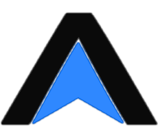
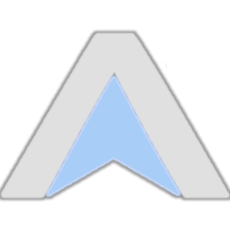

ЛИЧНОЕ ПОРТФОЛИО
Alexandr Azimov
Создаю сайты
и веб-приложения,
продумываю дизайн и SEO.
От идеи до удобного цифрового решения.
Alexandr Azimov

ПОРТФОЛИОЛИЧНОЕ ПОРТФОЛИО
Alexandr Azimov
От идеи до удобного цифрового решения.

Alexandr Azimov
Сайт, веб-приложение, дизайн или SEO — расскажите, что хотите сделать.
Выберите удобный способ связи
Сервер временно отключён. Снимки добавлю после восстановления доступа.
Страница проекта ↗ Открыть проектОб услуге
01Лендинг, сайт компании или страница проекта — с понятной структурой и удобным просмотром на разных устройствах.
Определяем страницы, навигацию и путь посетителя к нужному действию: заявке, покупке или знакомству с проектом.
Создаю интерфейс и адаптивную вёрстку. Формы, каталог и другие функции включаем по согласованному ТЗ.
Проверяю основные сценарии, формы и ссылки, настраиваю базовые метаданные и помогаю с публикацией в согласованной среде.
Расскажите о задаче и аудитории. Пригодятся примеры, список нужных страниц, тексты, изображения и фирменные материалы — если они уже есть.
Домен, хостинг, лицензии и подготовку контента согласуем отдельно. Их стоимость не включается автоматически в разработку.
Интерактивный сервис для конкретной задачи: личный кабинет, рабочий инструмент или система с собственными сценариями и данными.
Разбираем рабочий процесс, роли пользователей, данные и ограничения. Фиксируем функции первой версии и критерии их проверки.
Разрабатываю экраны и логику приложения. Авторизацию, хранение данных и права доступа включаем в согласованный объём.
Подключаю предусмотренные ТЗ сервисы, проверяю ключевые сценарии и готовлю проект к развёртыванию.
Опишите, кто будет пользоваться приложением и какую задачу оно решает. Для интеграций понадобятся документация сервисов и согласованные доступы.
Новые модули, постоянное администрирование и развитие после сдачи планируем отдельно от первой версии.
Визуальная концепция и интерфейс сайта или приложения — от структуры экранов до макетов, с которыми можно идти в разработку.
Обсуждаем задачу, аудиторию и примеры. Выстраиваем структуру экранов и ключевые пользовательские сценарии.
Подбираю типографику, цвета и оформление компонентов. Разрабатываю согласованные экраны в едином стиле.
Продумываю мобильные варианты и нужные состояния элементов. Готовлю макеты и материалы для передачи разработчику.
Нужны задача, список экранов и примеры того, что нравится. Если есть фирменный стиль или готовые тексты, включим их в работу.
Количество вариантов и итераций согласуем в ТЗ. Разработка по макетам — отдельная задача, если она не включена в общий проект.
Структура, содержание и техническая подготовка сайта, чтобы поисковым системам было проще понимать его страницы.
Изучаю страницы, навигацию, метаданные и доступность для индексации. Выделяю задачи и согласуем приоритеты.
Работаю над заголовками, описаниями, структурой контента и техническими настройками в пределах ТЗ.
Проверяю выполненные изменения и готовлю список дальнейших действий. Подключение инструментов вебмастера включаем по договорённости.
Пришлите адрес сайта, описание услуг и целевой аудитории. Для внедрения изменений понадобятся доступы; существующая статистика поможет точнее оценить задачу.
Результат услуги — согласованные работы и отчёт. Позиции, объём трафика и сроки индексации зависят в том числе от поисковых систем и не гарантируются.
Оформление сообщества или профиля и графика для публикаций — чтобы соцсети выглядели цельно и узнаваемо.
Обсуждаем аудиторию, площадки и задачи. Подбираю визуальное направление с учётом вашего фирменного стиля или создаю оформление с нуля.
Создаю аватары, обложки, карточки постов, истории и рекламные макеты. Нужные форматы и количество материалов фиксируем в ТЗ.
Адаптирую согласованные макеты под выбранные площадки. Готовлю файлы для публикации и редактируемые шаблоны, если они входят в задачу.
Пришлите ссылки на соцсети, список нужных материалов и примеры оформления. Понадобятся тексты, фотографии и логотип — если они уже есть.
Количество макетов, адаптаций и вариантов согласуем заранее. Ведение соцсетей, написание текстов, съёмку и настройку рекламы не включаем автоматически в дизайн.
Несколько направлений в одном проекте: например, сайт с уникальным дизайном, веб-приложение для сотрудников и SEO. Собираем нужный вам пакет под общую задачу.
Разбираем задачи бизнеса и связь между частями проекта. Согласуем общее ТЗ: состав пакета, этапы, сроки, стоимость и критерии приёмки.
Создаю общий визуальный стиль, сайт и предусмотренные ТЗ модули приложения. Продумываю роли сотрудников, работу с данными и необходимые интеграции.
Выполняю согласованные работы по SEO, проверяю взаимодействие сайта и приложения и готовлю их к запуску. Передаю результаты и инструкции по каждому направлению.
Опишите общую задачу, кто будет пользоваться сайтом и приложением, и какие процессы нужно связать. Если готового ТЗ нет, начнём с обсуждения состава проекта.
Пакет формируется индивидуально: все функции и услуги перечисляем в ТЗ. Хостинг, лицензии, внешние сервисы и дальнейшее сопровождение согласуем отдельно; позиции в поиске не гарантируются.
Состав, сроки и стоимость фиксируем в ТЗ. Несоответствия согласованному ТЗ исправляю; новые идеи и изменения объёма обсуждаем отдельно.
Количество итераций по дизайну и поддержку после сдачи определяем в ТЗ до начала работы.
Полный текст с приложениями · право РФ